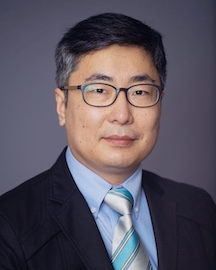

Members
 I'm a tenure track assistant professor in the Department of Computer Science at Kennesaw State University, Marietta, GA. I received a bachelor’s degree and a master’s degree in computer science from the University of Suwon in South Korea. I received another master’s degree and a doctoral degree in computer science from Georgia State University, Atlanta, GA, under the supervision of Dr. Saeid Belkasim. I was a recipient of the Brain & Behavior fellowship at the Neuroscience Institute and the Second Century Initiative Presidential fellowship at Georgia State University. After completing my Ph.D. degree, I worked as a postdoctoral fellow at Emory University for three years under the supervision of Dr. Lee Cooper and Dr. David Gutman. I worked as an assistant professor at Marshall University for four years. I'm a principal investigator for two NSF grants. My research interests include machine learning, informatics, medical image analysis, and bioinformatics.
 I'm currently pursuing a Master's degree in Computer Science at Kennesaw State University. I pursued my undergraduation in Information Technology from Vignan's Nirula Institute of Technology and Science for women. I have been quite passionate about computers and learning about current technologies. I'm enthusiastic about exploring the dynamic intersections of technology and its real-world applications. With a passion for exploring the frontiers of technology, I am dedicated to advancing my knowledge in computer science and its various domains. Through coursework, projects, and research, I am honing my skills in areas such as artificial intelligence, software development, and data analysis. I am excited to contribute to innovative research initiatives and collaborate with peers and faculty members to push the boundaries of technological innovation.
I'm currently pursuing a Master's degree in Computer Science at Kennesaw State University. I pursued my undergraduation in Information Technology from Vignan's Nirula Institute of Technology and Science for women. I have been quite passionate about computers and learning about current technologies. I'm enthusiastic about exploring the dynamic intersections of technology and its real-world applications. With a passion for exploring the frontiers of technology, I am dedicated to advancing my knowledge in computer science and its various domains. Through coursework, projects, and research, I am honing my skills in areas such as artificial intelligence, software development, and data analysis. I am excited to contribute to innovative research initiatives and collaborate with peers and faculty members to push the boundaries of technological innovation.